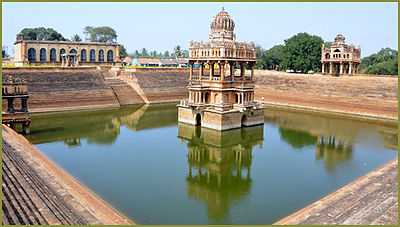

Davanagere was famous for textiles, with the DCM [Davanagere Cotton Mills] brand being famous in India. Davanagere was a major cotton textile exporter during the 1960's till the 80s. But most of the mills were shut down during the 90s and currently the major agro-industrial activity around Davanagere revolves around rice and sugarcane, with a number of sugar mills in and around this area. Davanagere is known for its higher educational institutes, most of which are run by the Bapuji Educational Association & other institutions. Davanagere has two Dental colleges, three engineering colleges, two medical colleges, one ayurvedic medical college, a fashion design college and a number of other colleges offering courses in arts, commerce and science. The student population is made up of people from different cities and states in India.
Davanagere (Kannada: ದಾವಣಗೆರೆ), also spelt Davangere, is a city in the heart of the southern indian state of Karnataka. It is the sixth largest city in the state, and the administrative headquarters of eponymous Davangere District. [1] Hitherto being a cotton hub and hence popularly known before as the Manchester of Karnataka, the commercial ventures of the city is now dominated by education and agro-processing industries. Davanagere became a separate district in 1997, when it was separated from the erstwhile undivided district of Chitradurga for administration conveniences. Davanagere is known for rich culinary traditions which encompass the diversity of entire Karnataka's dishes due to its geographical position in the state as its epicentre. Notable among them is its aromatic benne dose that is associated with the name of the city.